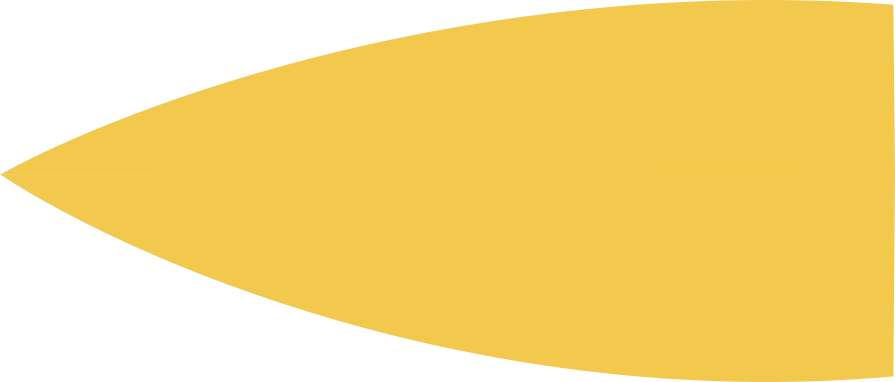
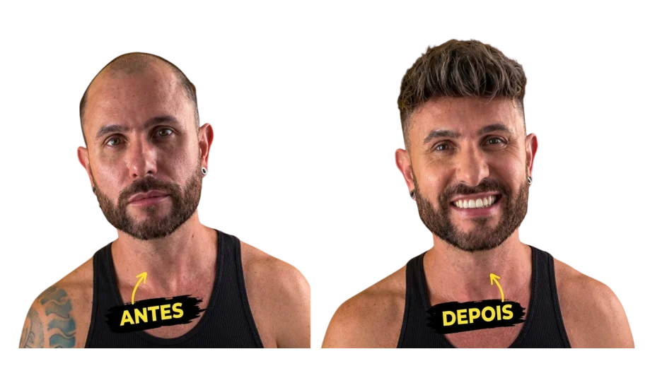

Avaliação
Entendemos seu estilo e o resultado que você espera.
Colocação · Manutenção · Atendimento personalizado
Agendar avaliação
Cuidado em cada etapa, da avaliação à manutenção.
Entendemos seu estilo e o resultado que você espera.
Prótese escolhida e aplicada de forma personalizada.
Higienização, hidratação e recolocação.
Bia Santander é especialista em prótese capilar: colocação e manutenção de próteses e técnica de nano fio, em Santo André, na Vila Curuçá. Com experiência em cabelo masculino, oferece atendimento personalizado e cuidadoso para homens que desejam recuperar a aparência dos cabelos, a autoestima e a confiança.
O atendimento é realizado com horário marcado, na Barbearia 23, na Av. Itamarati, em Santo André,
atendendo clientes de Santo André e região do ABC Paulista.
Agende sua avaliação pelo WhatsApp.
Meu trabalho com prótese capilar vai muito além da colocação.

Mais do que só colocar uma prótese, quero te devolver sua autossegurança, autoestima e a liberdade de se olhar no espelho e se sentir feliz com sua aparência! Eu gosto de pensar que cada cliente é único.
Eu busco te entender, o estilo de corte que você mais gosta e qual resultado você espera. A partir disso, escolhemos a prótese mais adequada e fazemos a colocação de forma personalizada, buscando respeitar a linha frontal, densidade e o caimento natural dos fios.
Durante esse processo, fazemos a higienização da prótese e do couro cabeludo, cuidamos da saúde da
pele, realizamos a hidratação dos fios e fazemos a recolocação, sempre buscando
preservar a qualidade da prótese e o conforto!
Te oriento sobre os cuidados em casa, porque acredito que é um
cuidado em conjunto, tanto meu na barbearia quanto a forma que a prótese é
tratada no dia a dia.
Cada detalhe faz parte do resultado.
Assista ao vídeo completo, com mais detalhes sobre a prótese capilar.
Onde nos encontrar
Santo André · ABC Paulista
Atendimento com horário marcado.
Clientes de Santo André e região.
Prótese capilar com atendimento personalizado e horário marcado.
Chamar no WhatsApp